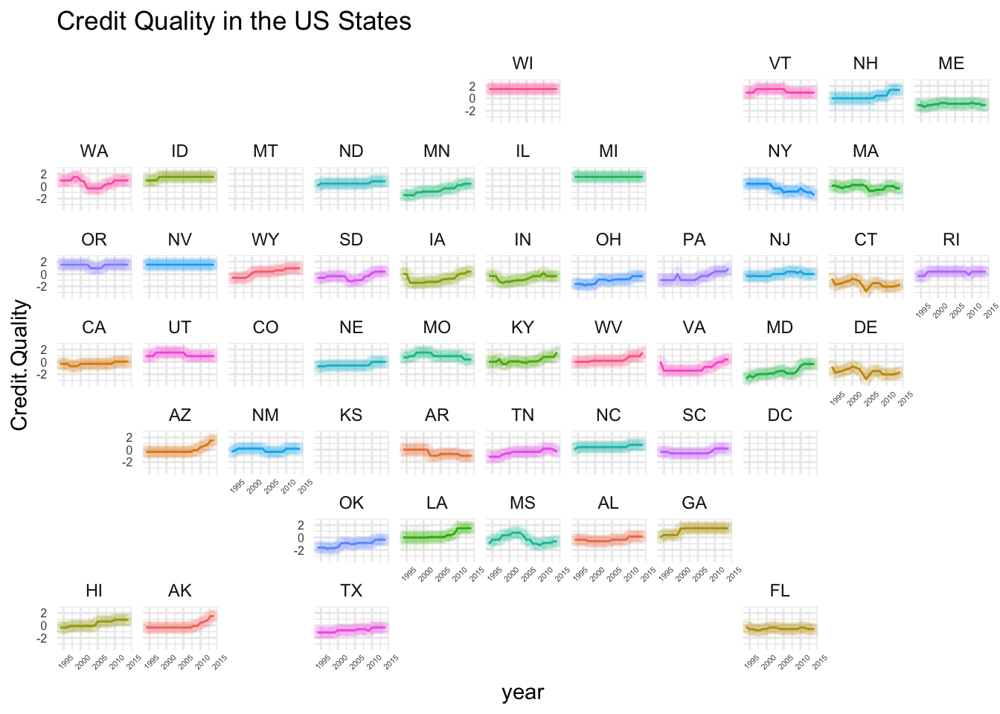

Show the code
library(haven)
library(dplyr)
library(geofacet)
Pew.Data <- read_dta(url("https://github.com/robertwwalker/academic-mymod/raw/master/data/Pew/modeledforprediction.dta"))
library(tidyverse)
load(url("https://github.com/robertwwalker/academic-mymod/raw/master/data/Pew/Scaled-BR-Pew.RData"))
state.ratings <- data.frame(state_name=Pew.Data$state, statefips=Pew.Data$statefips, year=Pew.Data$fyear, BR.Data)
state.ratings.long <- tidyr::gather(state.ratings, sampleno, value, -statefips, -year, -state_name)
state.SE <- state.ratings.long %>% group_by(state_name,year) %>% summarise(Credit.Quality=mean(value), t1=quantile(value, probs=0.025), t2=quantile(value, probs=0.975))
fips <- data.frame(
stringsAsFactors = FALSE,
state_name = c("Alabama","Alaska","Arizona",
"Arkansas","California","Colorado","Connecticut",
"Delaware","Florida","Georgia","Hawaii","Idaho",
"Illinois","Indiana","Iowa","Kansas","Kentucky","Louisiana",
"Maine","Maryland","Massachusetts","Michigan",
"Minnesota","Mississippi","Missouri","Montana","Nebraska",
"Nevada","New Hampshire","New Jersey","New Mexico",
"New York","North Carolina","North Dakota","Ohio",
"Oklahoma","Oregon","Pennsylvania","Rhode Island",
"South Carolina","South Dakota","Tennessee","Texas","Utah",
"Vermont","Virginia","Washington","West Virginia",
"Wisconsin","Wyoming","American Samoa","Guam",
"Northern Mariana Islands","Puerto Rico","Virgin Islands"),
state = c("AL","AK","AZ","AR","CA",
"CO","CT","DE","FL","GA","HI","ID","IL","IN","IA",
"KS","KY","LA","ME","MD","MA","MI","MN","MS",
"MO","MT","NE","NV","NH","NJ","NM","NY","NC","ND",
"OH","OK","OR","PA","RI","SC","SD","TN","TX",
"UT","VT","VA","WA","WV","WI","WY","AS","GU","MP",
"PR","VI"),
fips = c("01","02","04","05","06",
"08","09","10","12","13","15","16","17","18","19",
"20","21","22","23","24","25","26","27","28",
"29","30","31","32","33","34","35","36","37","38",
"39","40","41","42","44","45","46","47","48",
"49","50","51","53","54","55","56","60","66","69",
"72","78"))
Res1 <- left_join(state.SE, fips, by=c("state_name" = "state_name"))
Res1 %>% ggplot(., aes(x=year, y=Credit.Quality, group=state)) +
geom_pointrange(aes(ymin=t1, ymax=t2, colour=state, fill=state), alpha=0.1) +
geom_line(aes(colour=state)) +
guides(color="none", fill="none") +
facet_geo(~ state) +
theme_minimal() +
theme(axis.text.x = element_text(size=4, angle=45), axis.text.y = element_text(size=6)) + labs(title="Credit Quality in the US States")